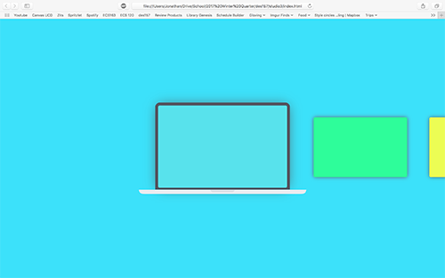
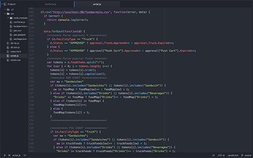
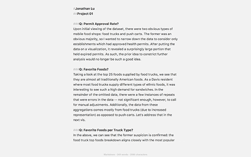
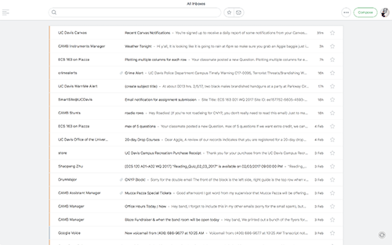
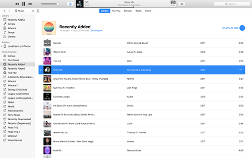

Safari: My go-to web browser. I used to be a chromie for years until I began taking my laptop around with me daily, leaving my charger at home. Its multi-device capabilities aren't as good as Chrome's, and neither are its developer features, but battery life is noticeably longer when used for extended periods of time.
Atom: The best code editor ever made (so far). With its beautiful default color scheme and near-infinite customizability, Atom sets a new bar in the coding environment. As stated above, I don't carry a charger throughout the day, so prolonging battery life is crucial -- as such, IDEs are disqualified; Atom is far more lightweight.
Byword: A Markdown editor, and a damn clean interface. Gone are the days of Microsoft Word and its clunky autoformatting. Byword (and the markdown language as a whole) strips down the entire writing process to a few sytax markers that define extremely basic formatting. Byword wraps that all up into a minimal, lightweight UI.
Newton: As you might be able to tell, I'm into minimal user interfaces. Newton puts that design philosophy into an email client that supports hotkeys for managing emails quickly. It also has a unobtrusive labeling system to indicate which inbox an email is from.
Itunes: While not my favorite app to use or look at, iTunes is a necessary evil in my life to keep me connected with my music. As a non-premium spotify member, I generally download all of my music locally to store on my phone for on-the-go tunes. Thus, Apple's default music management program will likely be in my life to say.
